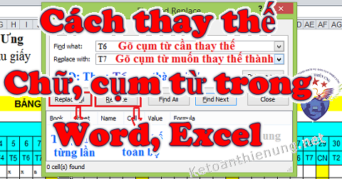
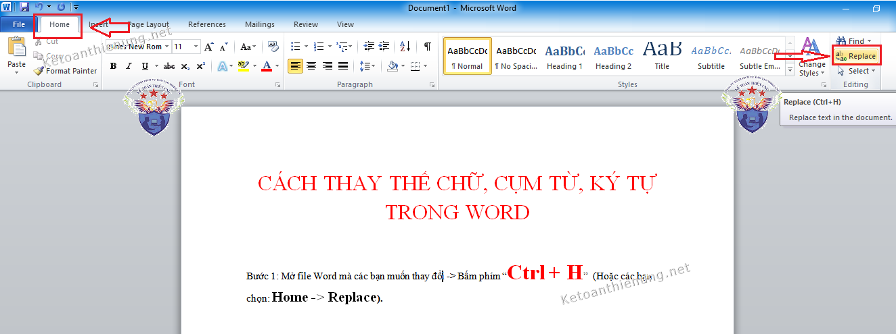
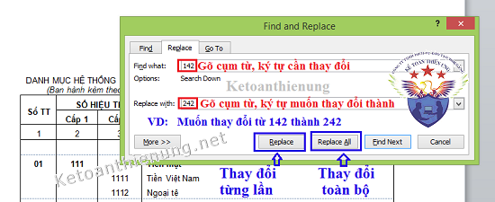
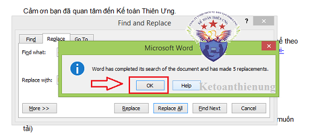
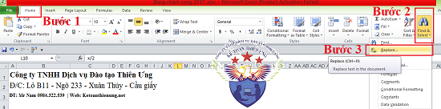
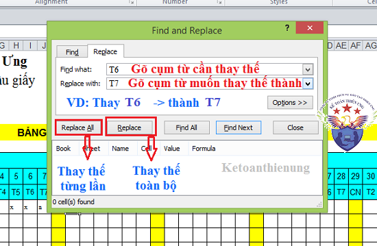
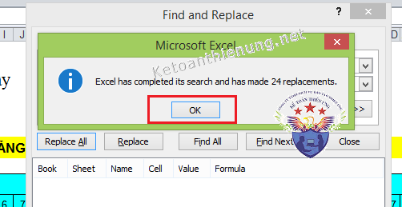

Hướng dẫn cách thay chữ trong Word và Excel: Cách thay thế một cụm từ, một ký tự hoặc thay thế hàng loạt từ trong Word và Excel 2007, 2010, 2013.

---------------------------------------------------------------------------------------------
- Mở file Word mà các bạn muốn thay đổi -> Bấm phím “Ctrl + H” (Hoặc các bạn chọn: Home -> Replace).



----------------------------------------------------------------------
2. Cách thay thế cụm từ, ký tự, chữ trong Excel
- Mở file Excel mà các bạn muốn thay đổi -> Bấm phím “Ctrl + H” (Hoặc các bạn chọn: Home -> Chọn Find & Select -> Replace).



Xem thêm: Cách chuyển đổi số thành chữ trong Excel
Kế toán Diệu Tâm xin chúc các bạn thành công
----------------------------------------
----------------------------------------